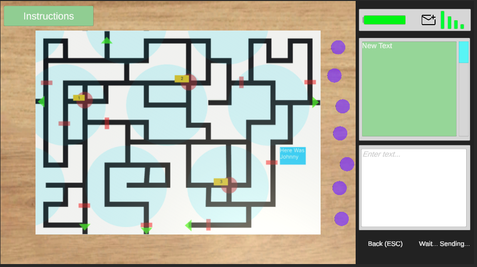

Freelance, Prototypes
YouTube Channel Ivan Codes
- Created an automated system that generates Unity visuals with DOTween and UniTask.
- Builds animations and sequences from prompt-based tasks in Shortcuts.
- Runs prompts in Cursor.
Lecture for Nature of the Sounds
- Lecture given at an event in Minsk, Belarus for 200 visitors.
- Demonstrated how the physics of sound works using Unity URP simulations.
- Molecule simulations are done with compute shaders.
- Animations are done with DOTween and UniTask.
Lost In A Cave
- Prototype made for a soft skills school.
- Two-player multiplayer: one player is lost in a cave, the other guides them out by phone.
- The second player has a map, figures out where the lost player is, and leads them out with messages.
- Battery drains when using the flashlight or sending texts.
- The cave has traps and landmarks.
- Server connects players over WebSocket, hosted on Railway.
